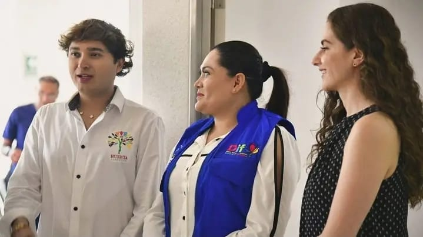

DONDE ENCONTRARNOS


Fundación Huerta nace con el propósito de ser un puente de apoyo y solidaridad para todas aquellas personas y familias que se encuentran en situación de vulnerabilidad. Desde nuestros inicios, nos propusimos crear un espacio donde la ayuda no sea solo un acto aislado, sino un proceso continuo de acompañamiento, prevención y fortalecimiento de la comunidad. Creemos firmemente que cada acción, por pequeña que parezca, tiene el potencial de generar un cambio real en la vida de alguien, y que al trabajar de manera conjunta con las personas, podemos construir un impacto positivo que se mantenga en el tiempo.
Somos un grupo de personas comprometidas, apasionadas y dedicadas, que entendemos que la verdadera transformación social se logra a través de la acción directa y la cercanía con quienes más lo necesitan. Nuestro equipo combina experiencia, empatía y sensibilidad para atender necesidades diversas, siempre con respeto, ética y responsabilidad. Nos esforzamos en escuchar a las comunidades, entender sus problemas y diseñar soluciones que realmente respondan a sus necesidades. Cada proyecto que emprendemos se basa en un análisis cuidadoso de la situación local, buscando intervenir de manera efectiva y sustentable.
En Fundación Huerta, nuestra labor abarca múltiples áreas, porque sabemos que la vulnerabilidad se presenta en diferentes formas y requiere de un enfoque integral. Trabajamos en la salud comunitaria, la educación, la prevención, el apoyo material y social, siempre buscando mejorar la calidad de vida de las personas. Llevamos brigadas médicas a distintas colonias y municipios, realizamos pruebas rápidas de VIH y hepatitis C, impartimos talleres de educación y prevención sobre salud sexual, y entregamos recursos esenciales como láminas, víveres, ropa y materiales para vivienda. Cada una de estas acciones no solo busca atender una necesidad inmediata, sino también generar conciencia, empoderar a las comunidades y fortalecer su autonomía.
Lo que nos distingue es nuestro compromiso con la cercanía y la relación humana. No trabajamos desde oficinas ni a distancia; nuestras actividades se desarrollan en los lugares donde la gente realmente nos necesita. Visitamos colonias, comunidades y municipios, compartimos tiempo con las familias, escuchamos sus historias y entendemos sus dificultades. Cada sonrisa, cada agradecimiento y cada testimonio de cambio nos recuerda por qué hacemos lo que hacemos y nos impulsa a continuar, siempre buscando mejorar y llegar más lejos.
Nuestra visión de la ayuda va más allá de entregar recursos: buscamos crear relaciones de confianza y respeto, enseñar a prevenir riesgos de salud, informar sobre derechos y generar un sentido de comunidad. Consideramos que la educación y la información son herramientas poderosas que pueden transformar vidas, y por eso cada taller, charla o material que entregamos está diseñado para ser útil, accesible y comprensible.
Además, en Fundación Huerta creemos en la transparencia y la rendición de cuentas. Cada proyecto, cada recurso y cada apoyo se planifica y ejecuta de manera responsable, asegurándonos de que los beneficios lleguen directamente a quienes más lo necesitan. Cada donación, cada colaboración y cada esfuerzo se traduce en acciones concretas que mejoran la vida de las personas y fortalecen la comunidad.
Somos también un espacio de innovación y aprendizaje constante. Cada brigada, campaña o proyecto es una oportunidad para mejorar, adaptar nuestras estrategias y generar mayor impacto. Escuchamos a las comunidades, evaluamos resultados, aprendemos de los errores y celebramos los logros. Esta filosofía nos permite mantenernos activos, efectivos y comprometidos con nuestra labor día tras día.
En Fundación Huerta entendemos que la solidaridad no se limita a una acción puntual, sino que es un compromiso constante con la vida de los demás. Por eso, nuestra identidad como organización se basa en el respeto, la empatía, la responsabilidad y el compromiso, valores que guían cada paso que damos y que nos permiten construir relaciones sólidas y duraderas con quienes atendemos. Cada acción está pensada para generar un impacto positivo, fortalecer la autoestima de las personas, fomentar la prevención y crear comunidades más resilientes y conscientes.
Finalmente, quienes forman parte de Fundación Huerta no solo trabajan, sino que viven la experiencia de ayudar. Creemos que cada persona que se une a nuestra labor, ya sea como voluntario, colaborador o aliado, aporta algo único y valioso. Cada sonrisa, cada historia compartida y cada logro alcanzado refuerza nuestra convicción de que el trabajo en comunidad, basado en la empatía y la solidaridad, es la mejor manera de construir un mundo más justo, humano y equitativo.
En resumen, somos un equipo que transforma acciones en resultados, intenciones en cambios y compromiso en esperanza. Fundación Huerta es un espacio donde la ayuda se convierte en oportunidad, la prevención en educación y la solidaridad en transformación. Nos dedicamos a caminar junto a las comunidades, a escuchar, a aprender, a enseñar y a brindar todo lo que esté a nuestro alcance para que cada persona, cada familia y cada colonia pueda vivir con mayor bienestar, salud y dignidad.